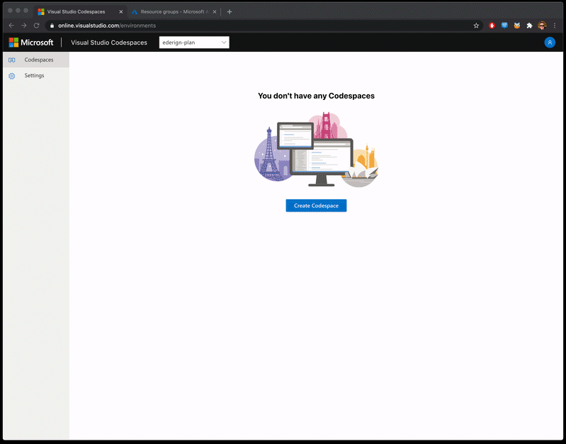
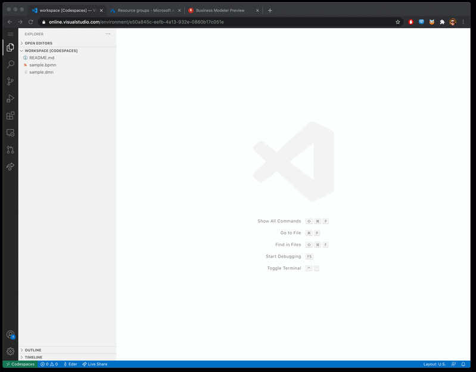
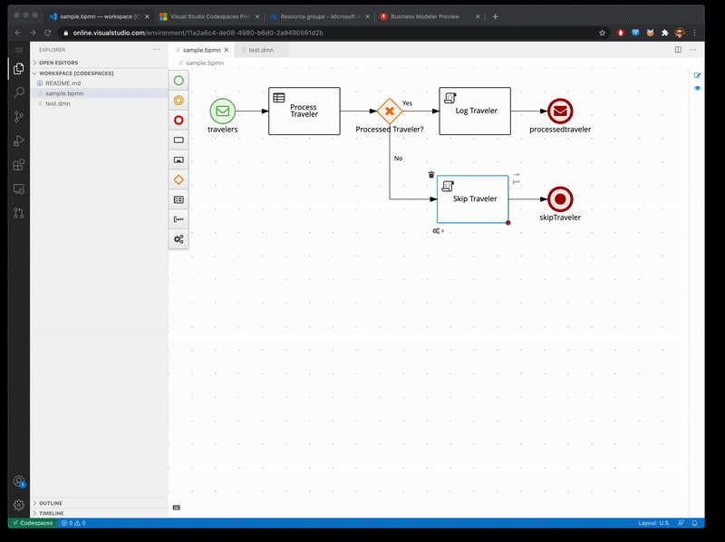

3 Steps to Online VS Code Experience for Business Automation Developers
Some days ago, Alex Porcelli shared a great demo of Business Automation tooling working inside GitHub Codespaces.
Github Codespaces is still on early access, but while you wait for it, the good news is that you can use the same BPMN and DMN extensions inside Visual Studio Code Online. Here is how to setup:
Step 1: Create a Visual Studio Codespaces
With an Azure account and subscription (there is a free tier, so can you give it a try), go to Visual Studio Code online, and create a Codespace.

Step 2: Install Kogito Bundle extension
Click on the Extensions menu, search for Kogito, and install it (VS Code will ask for a reload). Now your BPMN and DMN extensions are installed on your online environment.
Now you can create and edit any .bpmn .dmn or .scesim file with our graphical tooling!

Step 3: Enjoy BPMN and DMN extensions on VS Code Online
And that’s it :). Now you can enjoy editing your Business Automation assets in a 100% online environment.

As this work is still on ‘alpha’ stage and it’s running inside a container, the ‘first loading’ of the editor takes some seconds on a fresh install, but after that, everything runs smoothly.